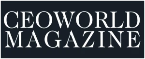
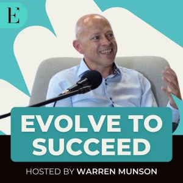
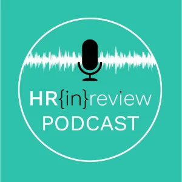

In Media
Featured, quoted and interviewed.
Selected features, interviews and commentary on meaning, luxury, brands and the future of capitalism, across global publications and podcasts.
Articles & Features
How Jaguar Is Abandoning The Language Of Luxury In Its Rebrand
Dr. Martina Olbert examines Jaguar's 2024 rebrand, arguing that the marque walked away from the codes and meaning that gave luxury its value, and what the risk means for the wider category.
Read on Forbes → Forbes · Article5 Reasons The Luxury Market Decline In 2024 Won't Recover In 2025
An analysis of the structural forces behind the luxury slowdown, with commentary from Olbert on why the decline is a crisis of meaning rather than a passing dip in demand.
Read on Forbes → The Robin Report The Robin Report · ArticleZegna's Strategy: Luxury And AI
A look at how Zegna balances technology with craft, drawing on Olbert's view that luxury is rooted in personal meaning, which automation cannot manufacture.
Read on The Robin Report → The Robin Report The Robin Report · ArticleLuxury Brands Are At Risk Of Losing Their Most Vital Customers, The HENRYs
Why aspirational high earners are drifting away from luxury, and what brands must rebuild to keep the value they once created for this pivotal audience.
Read on The Robin Report → Forbes · ArticleLuxury Has Lost Its Meaning, Here's How To Get It Back
Olbert sets out her core thesis that luxury has been hollowed of meaning by overexposure and discounting, and offers a route back to genuine value creation.
Read on Forbes → Newsweek · ArticleWho Will Buy Flying Cars? Startups And Industry Experts Divulge The Secret Formula
A feature on the emerging market for flying cars, with expert commentary on the meaning and status that would drive adoption among early buyers.
Read on Newsweek → Vogue Business · ArticleThe Impact Of Coronavirus Shifts West: LVMH, Gucci
Reporting on how the pandemic hit luxury manufacturing across the EU and US, featuring Olbert on the transition it would accelerate toward a new luxury paradigm.
Read on Vogue Business → Jing Daily · ArticleHow To Future-Proof Your Brand In China
A market analysis of what it takes for luxury houses to stay relevant with Chinese consumers, with Olbert on aligning brands to shifting cultural value.
Read on Jing Daily → Campaign · ArticleLessons From Semiotics: H&M's Coolest Monkey Epic Fail
Olbert uses semiotics to unpack how a single campaign misread cultural codes, and how brands can avoid culturally flammable ideas before they reach the market.
Read on Campaign →
CEOWorld Magazine · ArticleUnderstanding The Luxury-Seeking Customer
A commentary on what today's luxury customer actually seeks, and why meaning and identity now matter more than conspicuous ownership.
Read on CEOWorld Magazine → WARC · Article5 Lessons: What Amazon Means For The Future Of Luxury
Olbert draws lessons from Amazon on premiumisation and value, examining what luxury brands can and cannot borrow from mass-market scale.
Read on WARC → Luxury Society · ArticleThe Deal Between LVMH And Tiffany Represents A Win-Win Strategy
An opinion piece on the LVMH acquisition of Tiffany, reading it as an American icon meeting European cultural diversification to the benefit of both.
Read on Luxury Society → Luxury Daily · ArticleAmerican Luxury Jewelry Icon Meets Cultural Diversification
Coverage of why LVMH sought Tiffany for its foothold in US culture, with Olbert on the cultural value at stake in the acquisition.
Read on Luxury Daily → Branding Strategy Insider · ArticleHow To Bridge The Gap Between Brands And People
Olbert argues that brands lose people when they fall into a gap of meaning, and sets out how to lead a brand with meaning rather than message.
Read on Branding Strategy Insider → El País · ArticleUna Llamada De Atención Para El Lujo
A Spanish feature on the future of fashion and luxury after COVID, presenting the pandemic as a chance to transition toward a more meaningful new luxury.
Read on El País →Interviews
The New Meaning Of Luxury: What Does A Life Of Luxury Really Mean?
BBC Culture asks Olbert and others how the meaning of luxury has shifted, moving from possessions and display toward time, experience and human value.
Read on BBC Culture → World Luxury Chamber World Luxury Chamber · InterviewRe-Envisioning The Future Of Luxury Meaning
An exclusive interview in which Olbert lays out her vision for the future of luxury, centred on restoring meaning as the source of a brand's value.
Read on World Luxury Chamber → Brandknew Magazine Brandknew Magazine · InterviewA Rare Breed: Meet The Queen Of Meaning
A profile interview tracing Olbert's work in meaning, semiotics and brand value, and how she came to build a practice around human value creation.
Read on Brandknew Magazine →Podcasts

Evolve To Succeed · PodcastNot Consumers But Humans
Olbert joins the Evolve To Succeed podcast to argue that treating people as humans rather than consumers is the future of brands and capitalism.
Listen on Apple Podcasts → Thought Leadership Leverage Thought Leadership Leverage · PodcastThe Difference Between Meaning And Purpose For Brands
A conversation on why meaning and purpose are not the same, and how brands can shift from purpose statements to meeting real human needs.
Listen on Thought Leadership Leverage →
HR In Review · PodcastThe Great Resignation And The Future Of Work
Olbert discusses the Great Resignation as a human awakening, and what it means for the future of work, business and meaning at work.
Listen on HR In Review →Reports & Research